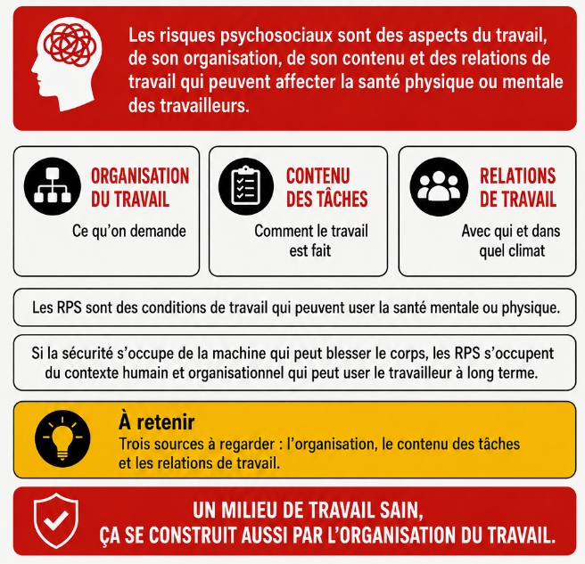
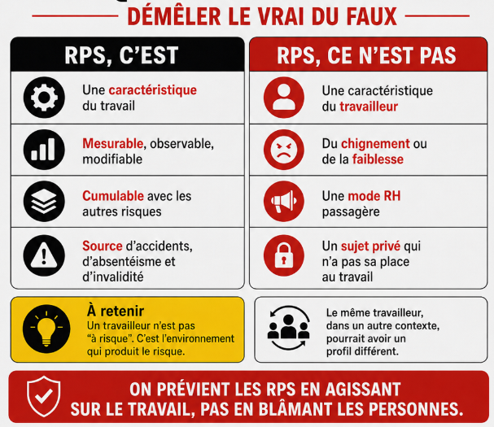
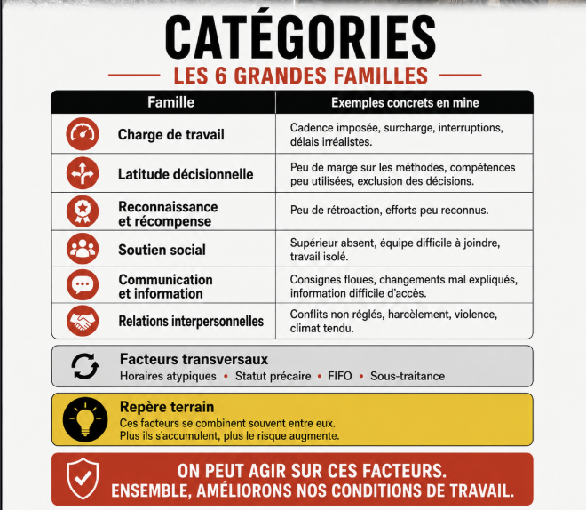
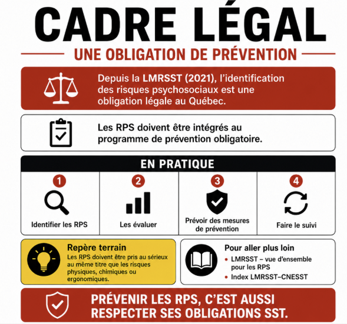

Définition des risques psychosociaux
Table des matières
L'essentiel : Les risques psychosociaux (RPS) sont les conditions de travail qui peuvent abîmer la santé mentale ou physique des travailleurs : surcharge, manque de contrôle, manque de soutien, reconnaissance absente, horaires perturbants, harcèlement. Ce ne sont pas des « problèmes de personnalité ». Ce sont des risques qu'on identifie, qu'on mesure et qu'on prévient comme on prévient une chute en hauteur.
Définition
{kind=link}

Toucher l'image pour l'agrandirDéfinition retenue par l'INSPQ et reprise par la CNESST, conforme au cadre proposé par l'INSPQ (2018). Trois sources : ce qu'on demande (organisation), comment c'est demandé (contenu), avec qui (relations).
Ce que ce n'est pas
{kind=link}

Toucher l'image pour l'agrandirCatégories
{kind=link}

Toucher l'image pour l'agrandir Toucher l'image pour l'agrandir
Toucher l'image pour l'agrandir
Cadre légal
{kind=link}

Toucher l'image pour l'agrandirDepuis la LMRSST (2021), l'identification des RPS est une obligation légale au Québec, intégrée au programme de prévention obligatoire. Voir LMRSST, vue d'ensemble pour les RPS et ⚖️ Index LMRSST, CNESST.
Documents et outils
| Document | Type | Source |
|---|---|---|
| Grille INSPQ d'identification des risques psychosociaux du travail | PDF gratuit, document de référence | inspq.qc.ca |
| Trousse INSPQ de surveillance de la santé mentale en milieu de travail | PDF gratuit | INSPQ |
| OMS, Guidelines on mental health at work (2022) | PDF gratuit | who.int |
| INSPQ (2018) 2373_risques_psychosociaux_travail_mesurables_modifiables.pdf | PDF gratuit | inrs.fr |
| EQCOTESST, données québécoises de référence | Rapport PDF | INSPQ |
| Norme CSA Z1003-13 | Norme PDF | CSA |
Voir le centre de ressources : 📁 Documents et outils.
Pour aller plus loin
Références
- INSPQ. Grille d'identification des risques psychosociaux du travail.
- Stansfeld, S. & Candy, B. (2006). Psychosocial work environment and mental health. Scandinavian Journal of Work, Environment & Health, 32(6), 443-462.
- Theorell, T. et al. (2015). A systematic review including meta-analysis of work environment and depressive symptoms. BMC Public Health, 15, 738. Theorell 2015, A systematic review including meta-analysis of work environment and depressive symptoms.pdf
- OMS. Mental health at work guidelines (2022).
Articles wiki connexes
Pages qui pointent ici (18)
- ✅ Santé mentale au travail, concepts de base SST psychosociale
- ❓ FAQ démarrage SST psychosociale
- ⭐ Top 20 articles SST psychosociale
- 🎯 Démarrage rapide pour direction et RH SST psychosociale
- 📁 Documents et outils SST psychosociale
- 📖 Glossaire SST psychosociale
- 📘 Comment utiliser ce wiki SST psychosociale
- 🔤 Index alphabétique des articles SST psychosociale
- Dimensions psychosociales du travail SST psychosociale
- Grille INSPQ d'identification des RPS SST psychosociale
- Le « tough guy » et l'évitement du signalement SST psychosociale
- Norme CSA Z1003-13 SST psychosociale
- Qualité de vie au travail (QVT) SST psychosociale
- Risques Psychosociaux (RPS) SST psychosociale
- Risques Psychosociaux (RPS) SST psychosociale
- Risques psychosociaux au travail SST psychosociale
- RPS (risques psychosociaux) SST psychosociale
- RPS au travail SST psychosociale